Simultaneous Assessment of Multiple Abilities
June 2017 Meeting of CCSSO TILSA/SCASS
Jonathan Templin, Ph.D.
Professor, Department of Educational Psychology, University of Kansas
Big Picture Overview
- A what, why, and how of multidimensional assessment methods
- How we can design Next Generation Science Standards (NGSS) assessments to provide multiple sources of information about students
- Expanding the menu of available options for providing actionable assessment

Assessing Multilple Dimensions
Two Key Questions
- What facets of knowledge, skills, or abilities (KSAs) are sought to be understood about a student?
- What characteristics of the tasks/items may interfere with such understanding?
Defining Terms I Will Use Today
- Trait/Skill/Attribute/Ability/Dimension:
- Score are numeric representations of traits
- Assessment/test: A collection of tasks used to quantify scores
- Item: A generic term for an assessment task
- Person/student/examinee/respondent: The person taking the assessment
- Psychometric Models/Methods: The mathematical linkage between the a student's performance and their score(s)
Common Methods of Assessment
Common Assessment Specifications
- Most large-scale tests are scored using a unidimensional psychometric model
- Unidimensional: One trait thought to underlie the items
One (main) score given to examinees

Sometimes more information is given...we will return to this shortly
Assessment Specification Diagram

Definitional Specificity of a Trait
- The definitional specificity of a trait is referred to as the grain size
- Driven by the level of specificity with which one desires to make inferences about students on the basis of their test score(s)
- What you want to know about a student
- In current summative testing, the grain size is often very coarse
- 4th Grade Math
- 7th Grade English Language Arts
- So, if more detailed information is needed, a more specific definition is needed:
- A math example: https://turnonccmath.net/
But Not All Tests Can Be Unidimensional
As constructs and standards become more detailed, it becomes harder to create items that align well to one dimension

Not Just NGSS/Math Practices
Consider the following item from a PARCC practice test:

Image source:
https://parcc.pearson.com/practice-tests/math/
(Algebra I Practice Test)
Possible Multidimensional Model
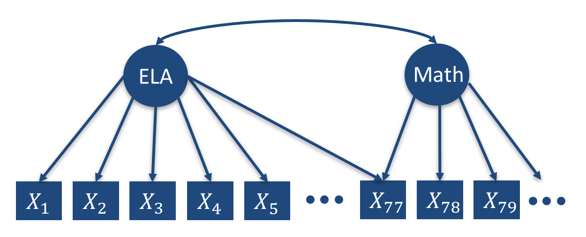
Section Summary
- Traits (and the scores that represent them) are made by definition (grain size)
- Most large-scale tests assess one trait, providing one score
- As definitional grain size narrows, more traits (and scores) are needed to describe behavior
- Additional scores can be good things!
Why Assess Multiple Dimensions?
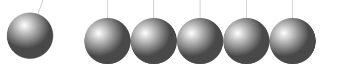
Motivations for Multiple Dimensions
- Additional information needed about student abilities
- Nature of some items necessitates multiple dimensions
- Constructs/standards are inherently multidimensional
Additional Information Needed
Additional information needed about student abilities (i.e., definition "grain size")
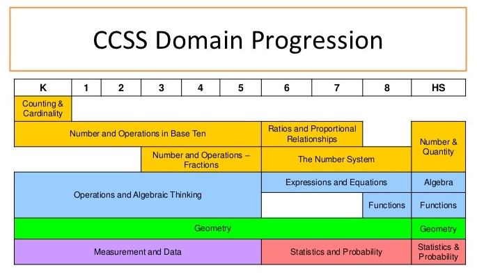
Item Features are Multidimensional
Nature of some items necessitates multiple dimensions (e.g. testlets)
- Example from PARCC practice test for ELA: https://parcc.pearson.com/practice-tests/english/
Technical details:
Typical IRT Model
$$P\left(Y_{pi} = 1 \middle| \theta_p \right) = \frac{\exp\left(\theta_p - b_i \right)}{1 + \exp\left(\theta_p - b_i \right)}$$Basic Testlet IRT Model
$$P\left(Y_{pi} = 1 \middle| \theta_p, \gamma_p \right) = \frac{\exp\left(\theta_p - b_i + \gamma_p \right)}{1 + \exp\left(\theta_p - b_i + \gamma_p \right)}$$Item Content is Multidimensional
Consider the Math Item from the PARCC Practice Test
Image source:
https://parcc.pearson.com/practice-tests/math/
(Algebra I Practice Test)
Multidimensional Model for the Math Item
Multidimensional Item Characteristic Curve

Multidimensional IRT Model
$P\left(Y_{pi} = 1 \middle| \text{ELA}_p, \text{Math}_p \right) = $ $$\frac{\exp\left(\beta_{0,i} + \beta_{ELA,i}\text{ELA}_p + \beta_{Math,i}\text{Math}_p + \beta_{Math \times ELA,i} \text{Math}_p \text{ELA}_p \right)}{1 + \exp\left(\beta_{0,i} + \beta_{ELA,i}\text{ELA}_p + \beta_{Math,i}\text{Math}_p + htt\beta_{Math \times ELA,i} \text{Math}_p \text{ELA}_p \right)}$$
Standards are Multidimensional
- Example: Next Generation Science Standards
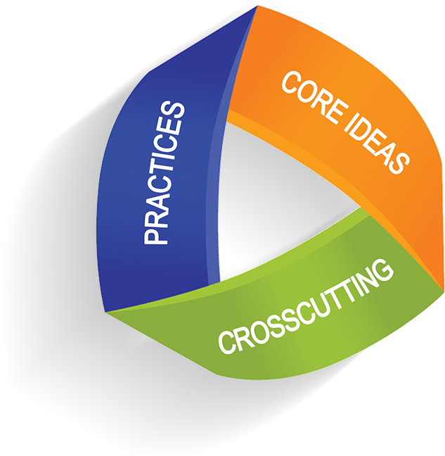
Section Summary
- Sometimes, a single score is not sufficient to characterize student test performance, KSAs, or behavior
- NGSS have multiple dimensions
- Core ideas
- Crosscutting concepts
- Practices
Common Assessment Practices are Inadequate for NGSS Dimensions
Most Operational Multidimensional Models
- Most large-scale summative testing programs are multidimensional...
- Multidimensional by a series of unidimensional tests
- Separate assessment of multiple dimensions
- Example: Assessment of ELA separate from Mathematics
- Even testing programs claiming new multidimensional models estimate each dimension separately
- Dynamic Learning Maps
- PARCC Formative Assessments
- Bad pratice: Taking a single dimension and turn it into multiple dimensions
- Create single score with all items of an assessment (a unidimensional model)
- Then create subscores by taking items from different content domains/strands (implying multiple dimensions)
- Subscale scores are necessarily at a finer grain size, but...
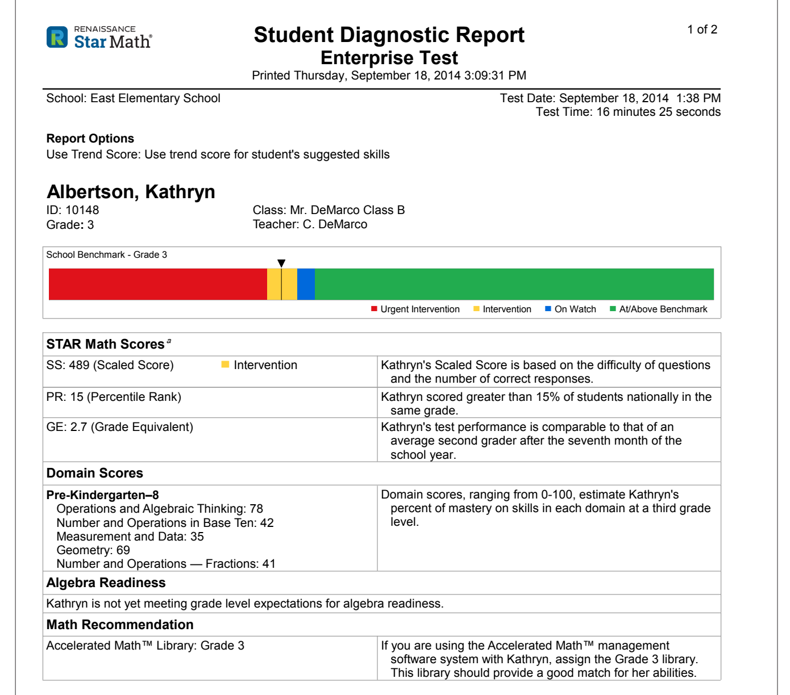
Image source:
http://doc.renlearn.com/KMNet/R0053249615EE616.pdf
(p. 8)
Much Ado about Subscores
Harvesting subscale scores from unidimensional tests is problematic:
- A uni- and multidimensional model both cannot be correct
- If the unidimensional model was appropriate for the test:
- Subscale scores should see correlations approach 1.0 as the number of items increases
- If the multidimensional model was appropriate for the test, then the unidimensional overall (total) score is not valid
- Either needs some type of arbitrary method for combining multiple scores (think Body Mass Index: total of height and weight of a person)
- Or, if calibrated with a unidimensional model, the score is likely is not as reliable as is being reported
- Subscale scores likely represent error
- Yet they are what are asked for the most by educators
- Grain size is information!
Section Summary
- None of the commonly-used current large-scale assessment practices allow multiple traits to be measured by an item
- In each method mentioned, each item only measures one trait
- Items built for Next Generation Science Standards assessment inherently will measure more than one trait
- One core concept
- One or more cross-cutting ideas
- One or more practices
Possible Models for Assessing NGSS

Multidimensional Model Familes
Models That May Work for Assessing NGSS Multidimensionally
- Multidimensional IRT Models (MIRT)
- Diagnostic Classification Models (DCMs)
- Of note: both are part of a larger family called Bayesian Inference Networks (BayesNets)
What's in a Model
Key Model Features
A psychometric model is a mathematical representation of students' item responses
\[Response = f\left(\text{Student Score(s)}, \text{Item Characteristics}, \text{Control Variables} \right) \]
- Left side \(\longrightarrow\) Data
- Right side \(\longrightarrow\) Student scores(s), item properties, and design controls
- Common item stimulus
- Item position
- Speededness,
- Classroom/school effects (hierarchical/multilevel data)
- Many different options exist for what appears on each side
- Each side can be tailored to match each test item's characteristics
From Models to Scores
The right-hand side of the model is where students' score(s) are embedded:
\[Response = f\left(\text{Student Score(s)}, \text{Item Characteristics}, \text{Control Variables} \right) \]
- The model uses scores to predict how students will perform on item responses
- That seems to imply we have to know students' scores before using a model
- We use a function of the model to get estimates of students' scores
- Either using Bayes' Theorem or by using Maximum Liklihood
- So, the model must agree with the data to ensure the scores are accurate
- Also, the model must agree with the data to ensure our quantification of reliability is accurate
Model Left-hand Side \(\left(Response\right)\)
\[Response = f\left(\text{Student Score(s)}, \text{Item Characteristics}, \text{Control Variables} \right) \]
- Useful for different types of items (Generalized Models)
- Items scored correct/incorrect \(\longrightarrow\) dichotomous model
- Items scored using partial credit \(\longrightarrow\) polytomous model
- Items scored using a continuum (TEI) \(\longrightarrow\) continuous response model
- Each variant seems to have a different name
- Names seem only to confuse the exact form
- Can help to avoid rubric scoring of technology-enhanced items
- Promise of more information from item
- A topic for another disucssion
Right-hand Side
\[Response = f\left(\text{Student Score(s)}, \text{Item Characteristics}, \text{Control Variables} \right) \]
- Item characteristics:
- Item parameters that link score(s) to item response
- Quantify how well the item measures score(s) and how much measurement error is included in item
- Control variables:
- Function as a remedy to any design features of items/students to ensure validity of measurement holds
- Types of scores:
- Continuous (scores; i.e., IRT models/Rasch Models/Factor Analysis)
- Nominal Categories (types of students; i.e., mixture IRT models; not often used in education)
- Ordinal Categories (master vs. non-master; i.e., Diagnostic Classification Models or DCMs)...discussed shortly
Multidimensional Models
Multidimensional models put more scores into the right hand side
\[P\left(Y_{pi} = 1 \middle| \text{ELA}_p, \text{Math}_p \right) = \frac{\exp\left(\beta_{0,i} + \beta_{ELA,i}\text{ELA}_p + \beta_{Math,i}\text{Math}_p \right)}{1 + \exp\left(\beta_{0,i} + \beta_{ELA,i}\text{ELA}_p + \beta_{Math,i}\text{Math}_p \right)}\]
- Not all items measure each dimension
- ELA-only items would only measure ELA dimension \(\longrightarrow\) Only contribute (directly) to ELA score
- So, how would this look for a science item?
Example of a NGSS-type Item
Source p. 17 https://osse.dc.gov/sites/default/files/dc/sites/osse/publication/attachments/DC%20Sample%20Items%20Booklet.pdf
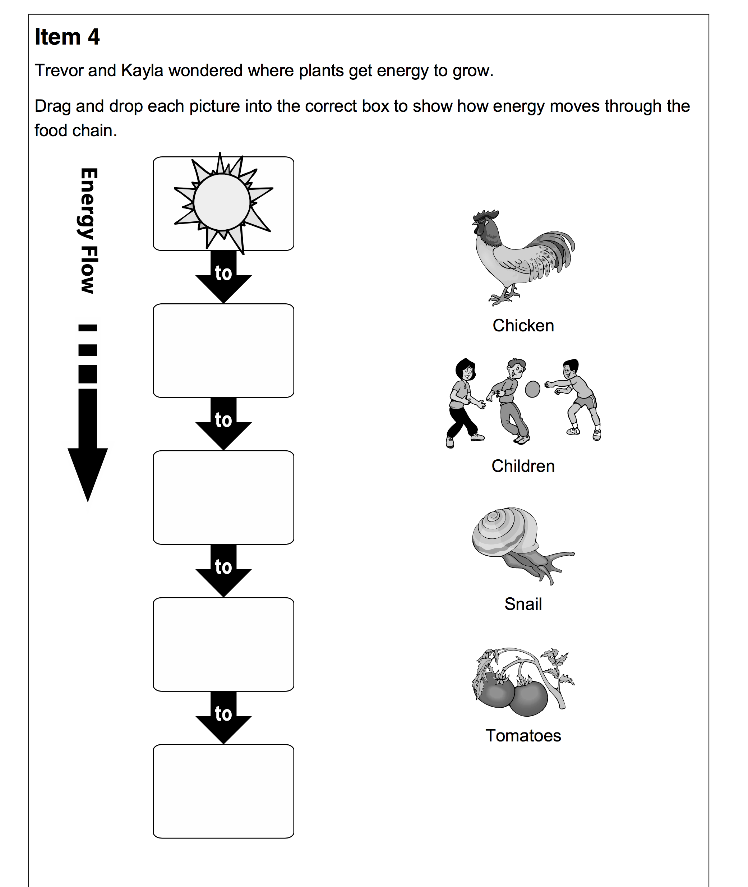
Example Item Specifications
Source p. 16 https://osse.dc.gov/sites/default/files/dc/sites/osse/publication/attachments/DC%20Sample%20Items%20Booklet.pdf

Multidimenional Model for Example Item
Imagine a model where each NGSS dimension is measured
- Practices
- Core Ideas
- Cross-cutting Concepts
The Curse of Dimensionality
- Although a multidimensional model for a NGSS item sounds straight forward, there is a catch...
- In general, as more dimensions are measured by a test, more items are needed to reach a reliable level of measurement for each dimension
- More items means more time for testing
More Dimensions \(\longrightarrow\) More Items
Diagnostic Classification Models
DCMs represent student abilities with ordinal categories instead of scores
- Why: In short it takes fewer items to classify a person with high reliability than it does to provide a continuous score with a high reliabilty
- How: Grouping students into homogeneous categories (masters vs. non-masters)
- Students within a category are considered to have the same amount of ability
- The masters category contains students that have more ability than the non-masters category
- Goal: To provide multiple "scores" per test with a high reliabilty
- Goal: To make sure tests are of a reasonable length
Names for Diagnostic Classification Model
DCMs have been called by many names:
- Cognitive diagnosis models
- Skills assessment models
- Cognitive psychometric models
- Latent response models
- Restricted (constrained) latent class models
- Multiple classification models
- Structured located latent class models
- Structured item response theory
Score Reliability Comparison
From: Templin and Bradshaw (2013; Journal of Classification)

DCM Reliability
IRT Model: Continuous Scores
Item Characteristic Curve for an Item Measuring One Score

Technical details:
IRT Model Parameterization
For a person $p$ and an item $i$, the two-parameter logistic IRT model specifies: $$P(X_{pi}=1 \middle| \theta_p) = \frac{\exp\left({a_i\left(\theta_p - b_i\right)}\right)}{1+\exp\left({a_i\left(\theta_p - b_i\right)}\right)} = \frac{\exp\left(\lambda_{i0} + \lambda_{i1} \theta_p \right)}{1+\exp\left(\lambda_{i0} + \lambda_{i1} \theta_p \right)}$$ Where:- $\theta_p \sim N(0,1)$ is the person-specific latent variable (ability)
- $a_i$ is the item-specific discrimination parameter
- $b_i$ is the item-specific difficulty parameter
- $\lambda_{i0} = -a_ib_i$ is the item-specific intercept
- $\lambda_{i1} = a_i$ is the item-specific slope
DCM: Categorical Scores
Item Characteristic Bar Chart for an Item Measuring One Score
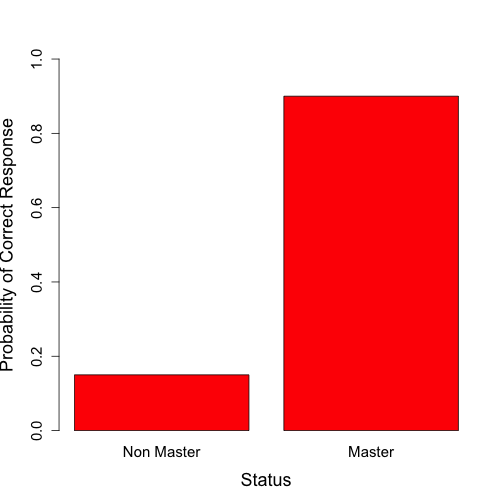
DCM: Categorical Score
Item Characteristic Bar Chart (Two Scores)
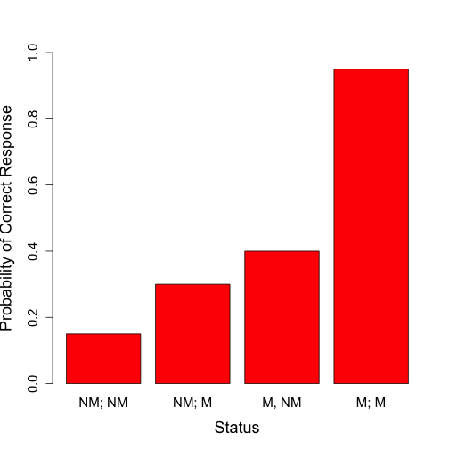
Technical details:
DCM Model Parameterization (One Score)
For a person $p$ and an item $i$, the model specifies: $$P(X_{pi}=1 | \alpha_p) = \frac{\exp\left(\lambda_{i,0} + \lambda_{i,1,(1)} \alpha_p \right)}{1+\exp\left(\lambda_{i,0} + \lambda_{i,1,(1)} \alpha_p \right)}$$ Where:- $\alpha_p \sim B(p_{\alpha})$ is the person-specific latent variable (mastery status; 0=non master 1=master)
- $\lambda_{i,0}$ is the item-specific intercept
- $\lambda_{i,1,(1)}$ is the item-specific main effect
DCM Model Parameterization (Two Scores)
For a person $p$ and an item $i$, the model specifies: $$P(X_{pi}=1 | \alpha_p) = \frac{\exp\left(\lambda_{i,0} + \lambda_{i,1,(1)} \alpha_{p1} + \lambda_{i,1,(2)} \alpha_{p2}+ \lambda_{i,2,(1,2)} \alpha_{p1}\alpha_{p2}\right)}{1+\exp\left(\lambda_{i,0} + \lambda_{i,1,(1)} \alpha_{p1} + \lambda_{i,1,(2)} \alpha_{p2}+ \lambda_{i,2,(1,2)} \alpha_{p1}\alpha_{p2}\right)}$$ Where:- $\alpha_p \sim B(p_{\alpha})$ is the person-specific latent variable (mastery status; 0=non master 1=master)
- $\lambda_{i,0}$ is the item-specific intercept
- $\lambda_{i,1,(1)}$ is the item-specific main effect for $\alpha_{p1}$
- $\lambda_{i,1,(2)}$ is the item-specific main effect for $\alpha_{p2}$
- $\lambda_{i,2,(1,2)}$ is the item-specific interaction for $\alpha_{p1}$ and for $\alpha_{p2}$
Example of DCM Score Report

Section Summary
- Assessing multiple dimensions simultaneously is difficult
- More dimensions necessitates one or more of:
- Changes to the score (e.g., from continuous to categorical)
- More items on the assessment

A (Realistic) Model for Assessing NGSS Dimensions Multidimensionally
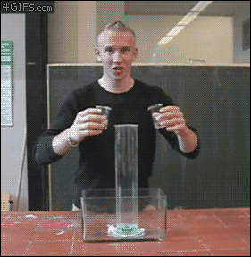
Model Building
Here is an idea intended to prompt a discussion of what a multidimensional model for NGSS assessment might look like
Within a given grade level:
- Measure content domain as a continuous trait, yielding scores for assessed topics:
- Physical Sciences
- Life Sciences
- Earth and Space Sciences
- Engineering, Technology, and Applications
- Measure cross-cutting concepts as an ordinal trait
- Yielding a mastery status for each concept
- Measure practices as an ordinal trait
- Yielding a mastery status for each concept
Hypothetical Specification
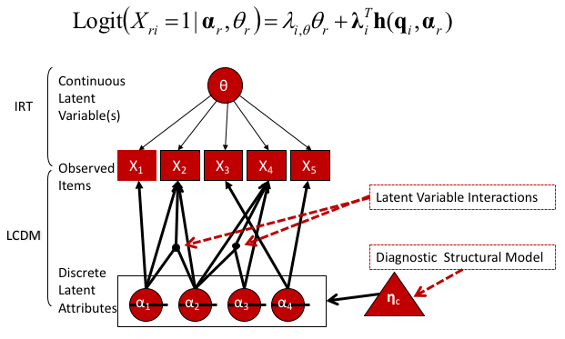
Dichotomous Item Model
Concepts/Practices Are Sequential
Can Build Linked Assessment that Can Shorten Test
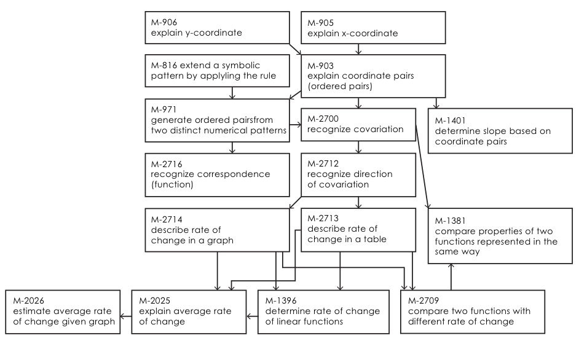
Concluding Remarks

Concluding Remarks
- Obtaining meaningful and reliable scores/diagnoses from multidimensional assessment is difficult
- Takes planfulness from test development to scoring to score reporting
- Multidimensional assessment is useful
- More actional information about what students know and where students should study
Concluding Remarks
- There is more to the psychometric menu than is currently advertised
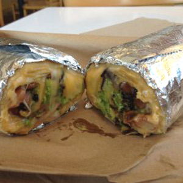Image source: http://hackthemenu.com/chipotle/secret-menu/quesarito/ - #HackTheMenu
Thank you!
Questions? Comments? Complaints?
- Email: jtemplin@ku.edu
- Website: https://jonathantemplin.com
- Twitter: @DrJTemplin
- Slides available: https://goo.gl/8EN132
- Built in R with the slidify package: http://slidify.org/
- Talk script available: https://github.com/jonathantemplin/CCSSO-June2017